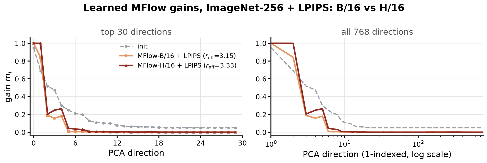
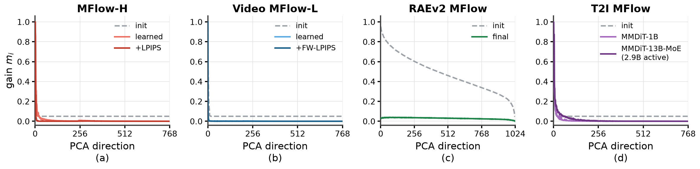
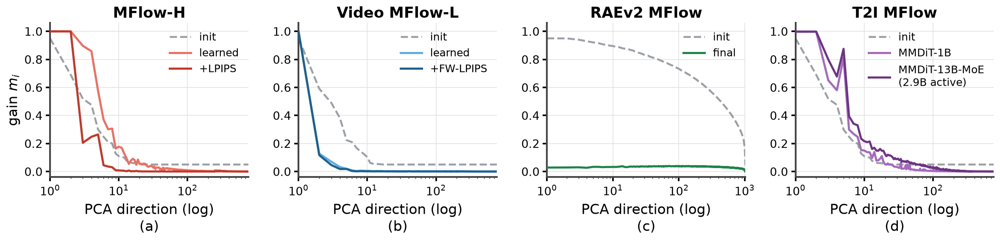
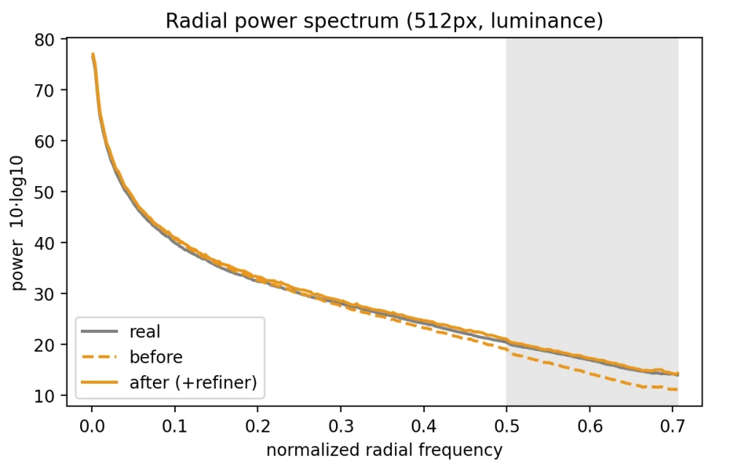
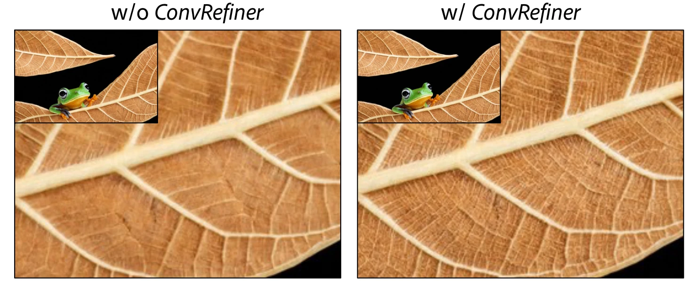

↔
Anonymous supplementary material for peer review, ICLR 2027 Submission 22855.
Learned MFlow gains $m_i$ for B/16 vs. H/16, same recipe (ImageNet-256 + LPIPS). The larger model keeps slightly more velocity-like gain: $r_{\text{eff}}$ 3.15 → 3.33.

The paper plots the first 30 directions. Here are all 768 (1024 for RAEv2). Beyond the head the gains are flat at zero, except RAEv2 where they are near zero everywhere.


Interactive version of Fig. 2 from the paper for better understanding. Pick a preset or drag the gains $m_i$ and watch the target $u_G = x_0 - M\epsilon$ change. The MFlow preset is the learned MFlow-H/16 + LPIPS curve.
Loading interactive demo…
512px text-to-image, MFlow-XXL/16. Without the refiner the spectrum falls −2.53 dB below real images in the 0.5–0.7 band. With it every band is within 1 dB.

| Band (normalized radial frequency) | w/o ConvRefiner | w/ ConvRefiner | Change |
|---|---|---|---|
| low (< 0.125) | +0.71 | +0.87 | +0.16 |
| mid (0.125–0.25) | +0.27 | +0.84 | +0.57 |
| high (0.25–0.5) | −0.70 | +0.62 | +1.33 |
| > 0.5 (shaded band) | −2.53 | +0.39 | +2.91 |
Table 1. Mean deviation from the real-image spectrum per band (dB). Positive means more power than real images.

MFlow-XXL/16 text-to-image, without / with ConvRefiner. Click or drag to move the divider. The panes show the same region at 2×.